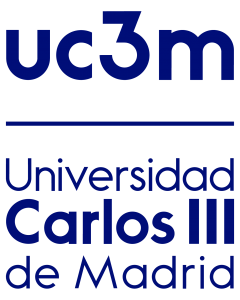
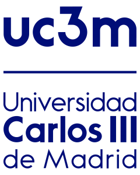
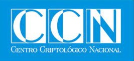
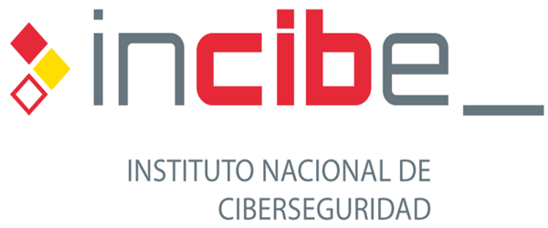
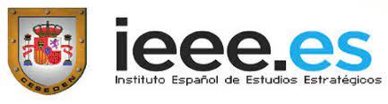
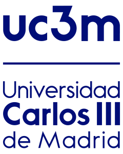

Ciberamenazas AVanzadas: analíTIca de mecanismOs y víNculos Sociopolíticos
29 de Septiembre - Aula Magna (Getafe)
1º Sesión (9'30) - Presentación
2ª Sesión (9'45) - Panorámica de la situación de ciberseguridad
3ª Sesión (10'30) - Panorámica de la situación socio-política
DESCANSO (11'15)
4ª Sesión (11'45) - Mesa redonda: Ciberataques: presente y futuro
5ª Sesión (13'00) - Amenazas persistentes avanzadas: un punto de vista técnico y modelo analítico
6ª Sesión (13'30) - Cierre
  
Dpto. Informática. Computer Security Lab (COSEC)
Dpto. de Dº Internacional, Eclesiástico y Fª del Dº
Instituto de Estudios Internacionales y Europeos

Acción financiada por la Comunidad de Madrid a través de la línea "Estímulo a la Investigación de Jóvenes Doctores" del Convenio Plurianual con la UC3M (ACRONIMO-CM-UC3M), en el marco del V PRICIT (V Plan Regional de Investigación Científica e Innovación Tecnológica